library(dplyr) # Data manipulation
library(tidyr) # Tidy messy data
library(ggplot2) # Data visualization
library(ggpubr) # ggarrange
library(patchwork)
library(fastDummies) # make dummy variables
library(rms)
source("R/util.R")
# functions in "util.R"
# get_rcs: implement the formula of rcs components
# step_dummy: dummy variables
# step_rcs: rcs
# step_interaction: interaction terms
# step_center: centering
# get_mean: get mean values from the original dataset
# root.search: Root searching, not in use in this .qmd file
source("R/calibration.R") # for calibration plotsCentered algorithms using real data - Linear regression
Dataset: California Housing Prices
We will use the California Housing Prices dataset for the examples.
About this file
longitude: A measure of how far west a house is; a higher value is farther westlatitude: A measure of how far north a house is; a higher value is farther northhousing_median_age: Median age of a house within a block; a lower number is a newer buildingtotal_rooms: Total number of rooms within a blocktotal_bedrooms: Total number of bedrooms within a blockpopulation: Total number of people residing within a blockhouseholds: Total number of households, a group of people residing within a home unit, for a blockmedian_income: Median income for households within a block of houses (measured in tens of thousands of US Dollars)Outcome:
median_house_value: Median house value for households within a block (measured in US Dollars).ocean_proximity: Location of the house w.r.t ocean/sea
data <- read.csv("data/housing.csv", stringsAsFactors = TRUE)
dim(data)[1] 20640 10# there is only a few observations with missing data, for simplicity, remove `NA`s
data <- data[complete.cases(data), ]
dim(data)[1] 20433 10summary(data) longitude latitude housing_median_age total_rooms
Min. :-124.3 Min. :32.54 Min. : 1.00 Min. : 2
1st Qu.:-121.8 1st Qu.:33.93 1st Qu.:18.00 1st Qu.: 1450
Median :-118.5 Median :34.26 Median :29.00 Median : 2127
Mean :-119.6 Mean :35.63 Mean :28.63 Mean : 2637
3rd Qu.:-118.0 3rd Qu.:37.72 3rd Qu.:37.00 3rd Qu.: 3143
Max. :-114.3 Max. :41.95 Max. :52.00 Max. :39320
total_bedrooms population households median_income
Min. : 1.0 Min. : 3 Min. : 1.0 Min. : 0.4999
1st Qu.: 296.0 1st Qu.: 787 1st Qu.: 280.0 1st Qu.: 2.5637
Median : 435.0 Median : 1166 Median : 409.0 Median : 3.5365
Mean : 537.9 Mean : 1425 Mean : 499.4 Mean : 3.8712
3rd Qu.: 647.0 3rd Qu.: 1722 3rd Qu.: 604.0 3rd Qu.: 4.7440
Max. :6445.0 Max. :35682 Max. :6082.0 Max. :15.0001
median_house_value ocean_proximity
Min. : 14999 <1H OCEAN :9034
1st Qu.:119500 INLAND :6496
Median :179700 ISLAND : 5
Mean :206864 NEAR BAY :2270
3rd Qu.:264700 NEAR OCEAN:2628
Max. :500001 Some data cleaning
There are only 5 observation where ocean_proximity == ISLAND. Remove this in the analysis.
data <- data %>% filter(ocean_proximity != "ISLAND") %>% droplevels()
dim(data)[1] 20428 10summary(data) longitude latitude housing_median_age total_rooms
Min. :-124.3 Min. :32.54 Min. : 1.00 Min. : 2
1st Qu.:-121.8 1st Qu.:33.93 1st Qu.:18.00 1st Qu.: 1450
Median :-118.5 Median :34.26 Median :29.00 Median : 2127
Mean :-119.6 Mean :35.63 Mean :28.63 Mean : 2637
3rd Qu.:-118.0 3rd Qu.:37.72 3rd Qu.:37.00 3rd Qu.: 3143
Max. :-114.3 Max. :41.95 Max. :52.00 Max. :39320
total_bedrooms population households median_income
Min. : 1.0 Min. : 3 Min. : 1.0 Min. : 0.4999
1st Qu.: 296.0 1st Qu.: 788 1st Qu.: 280.0 1st Qu.: 2.5634
Median : 435.0 Median : 1166 Median : 409.0 Median : 3.5375
Mean : 537.9 Mean : 1425 Mean : 499.5 Mean : 3.8714
3rd Qu.: 647.0 3rd Qu.: 1723 3rd Qu.: 604.0 3rd Qu.: 4.7441
Max. :6445.0 Max. :35682 Max. :6082.0 Max. :15.0001
median_house_value ocean_proximity
Min. : 14999 <1H OCEAN :9034
1st Qu.:119475 INLAND :6496
Median :179700 NEAR BAY :2270
Mean :206822 NEAR OCEAN:2628
3rd Qu.:264700
Max. :500001 Remove the space in ocean_proximity levels to avoid some syntax issue later.
levels(data$ocean_proximity) <- gsub(" ", "_", levels(data$ocean_proximity))
dim(data)[1] 20428 10summary(data) longitude latitude housing_median_age total_rooms
Min. :-124.3 Min. :32.54 Min. : 1.00 Min. : 2
1st Qu.:-121.8 1st Qu.:33.93 1st Qu.:18.00 1st Qu.: 1450
Median :-118.5 Median :34.26 Median :29.00 Median : 2127
Mean :-119.6 Mean :35.63 Mean :28.63 Mean : 2637
3rd Qu.:-118.0 3rd Qu.:37.72 3rd Qu.:37.00 3rd Qu.: 3143
Max. :-114.3 Max. :41.95 Max. :52.00 Max. :39320
total_bedrooms population households median_income
Min. : 1.0 Min. : 3 Min. : 1.0 Min. : 0.4999
1st Qu.: 296.0 1st Qu.: 788 1st Qu.: 280.0 1st Qu.: 2.5634
Median : 435.0 Median : 1166 Median : 409.0 Median : 3.5375
Mean : 537.9 Mean : 1425 Mean : 499.5 Mean : 3.8714
3rd Qu.: 647.0 3rd Qu.: 1723 3rd Qu.: 604.0 3rd Qu.: 4.7441
Max. :6445.0 Max. :35682 Max. :6082.0 Max. :15.0001
median_house_value ocean_proximity
Min. : 14999 <1H_OCEAN :9034
1st Qu.:119475 INLAND :6496
Median :179700 NEAR_BAY :2270
Mean :206822 NEAR_OCEAN:2628
3rd Qu.:264700
Max. :500001 Histograms of each continuous variable
dflong <- pivot_longer(data, -ocean_proximity, names_to = "variable", values_to = "value")
ggplot(dflong, aes(value)) +
geom_histogram()+
facet_wrap(~variable, scales = "free")+
theme_minimal()+
labs(title = "Histogram of each continuous variable")`stat_bin()` using `bins = 30`. Pick better value with `binwidth`.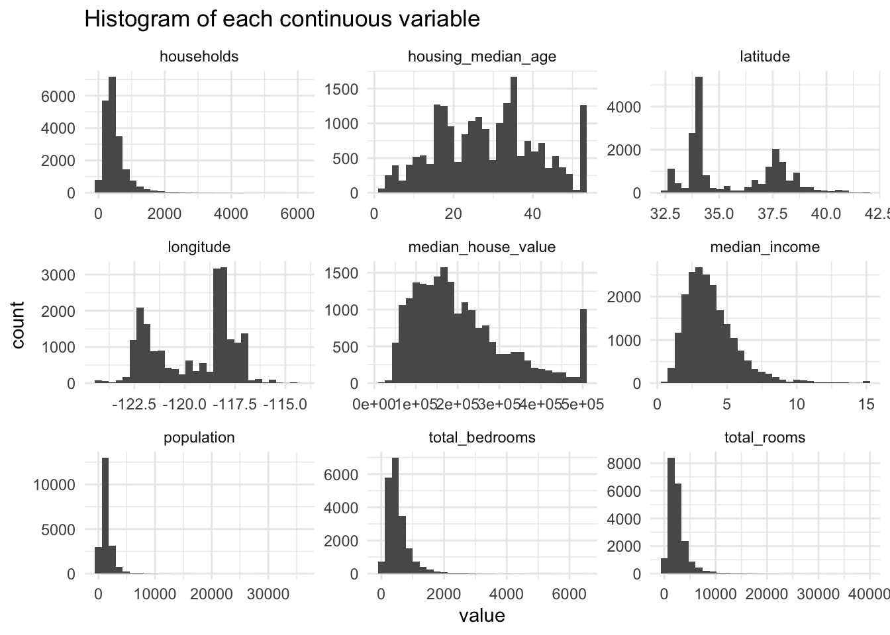
Notice the capping (ceiling effect) of housing_median_age and median_house_value. Crop the data for a simpler example, also because we have a huge dataset to work with.
data <- data %>%
filter(
median_house_value < max(data$median_house_value),
housing_median_age < max(data$housing_median_age))
dflong <- pivot_longer(data, -ocean_proximity, names_to = "variable", values_to = "value")
ggplot(dflong, aes(value)) +
geom_histogram()+
facet_wrap(~variable, scales = "free")+
theme_minimal()+
labs(title = "Histogram of each continuous variable")`stat_bin()` using `bins = 30`. Pick better value with `binwidth`.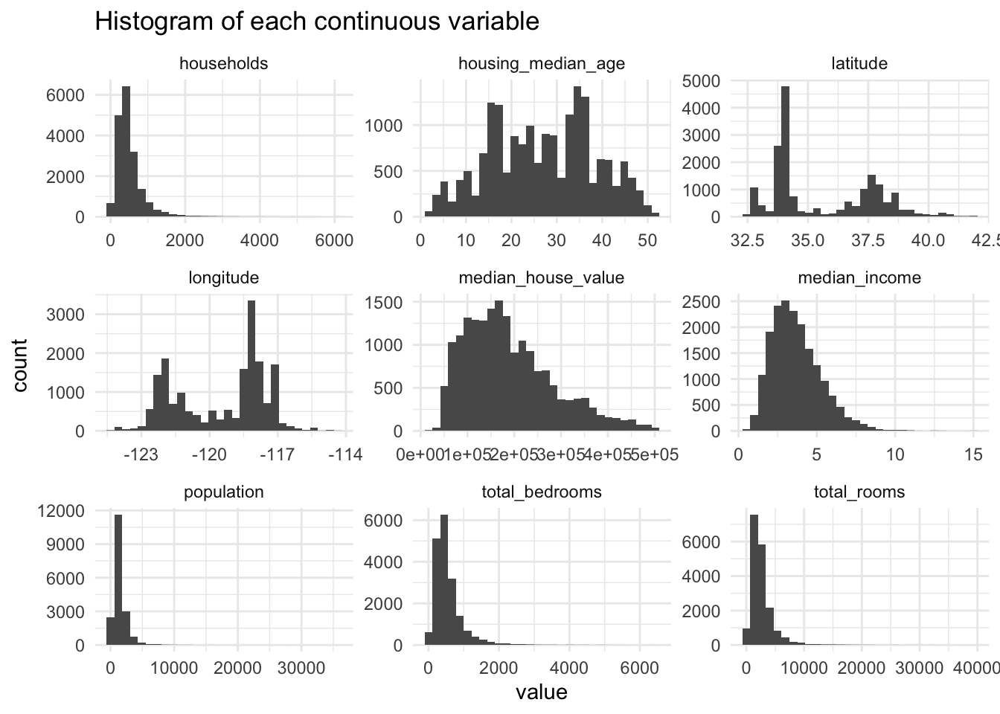
summary(data) longitude latitude housing_median_age total_rooms
Min. :-124.3 Min. :32.54 Min. : 1.00 Min. : 2
1st Qu.:-121.5 1st Qu.:33.92 1st Qu.:17.00 1st Qu.: 1458
Median :-118.5 Median :34.24 Median :27.00 Median : 2142
Mean :-119.5 Mean :35.59 Mean :26.97 Mean : 2670
3rd Qu.:-118.0 3rd Qu.:37.67 3rd Qu.:36.00 3rd Qu.: 3182
Max. :-114.3 Max. :41.95 Max. :51.00 Max. :39320
total_bedrooms population households median_income
Min. : 2 Min. : 3 Min. : 2.0 Min. : 0.4999
1st Qu.: 300 1st Qu.: 811 1st Qu.: 284.0 1st Qu.: 2.5370
Median : 442 Median : 1203 Median : 416.0 Median : 3.4706
Mean : 548 Mean : 1470 Mean : 508.6 Mean : 3.6938
3rd Qu.: 659 3rd Qu.: 1779 3rd Qu.: 614.0 3rd Qu.: 4.6167
Max. :6445 Max. :35682 Max. :6082.0 Max. :15.0001
median_house_value ocean_proximity
Min. : 14999 <1H_OCEAN :8235
1st Qu.:115400 INLAND :6290
Median :171200 NEAR_BAY :1549
Mean :189544 NEAR_OCEAN:2303
3rd Qu.:243200
Max. :500000 Data sampling
# random split the data into trian/test = 0.7/0.3
set.seed(101) # Set Seed so that same sample can be reproduced in future also
# Now Selecting 75% of data as sample from total 'n' rows of the data
sample <- sample.int(n = nrow(data), size = floor(.7*nrow(data)), replace = F)
vec <- rep("", nrow(data))
vec[sample] <- "train"
vec[-sample] <- "test"
data$type <- vec
data$type <- factor(data$type, levels= c("train", "test"))
train <- data %>% filter(type == "train")
test <- data %>% filter(type == "test")For a large dataset like the California Housing Prices, the distributions of each variable in train and test datasets, including the outcome, can be very close by random sampling.
library(gtsummary)
data %>%
tbl_summary(by = "type") %>%
modify_header(label = "**Variable**") %>% # update the column header
modify_caption("Table 1. Summary of the two datasets") %>%
bold_labels() %>%
as_flex_table()Variable | train | test |
|---|---|---|
longitude | -118.45 (-121.56, -117.97) | -118.45 (-121.53, -117.97) |
latitude | 34.24 (33.92, 37.67) | 34.24 (33.92, 37.67) |
housing_median_age | 27 (17, 36) | 27 (18, 36) |
total_rooms | 2,155 (1,465, 3,184) | 2,114 (1,439, 3,174) |
total_bedrooms | 443 (303, 659) | 438 (295, 659) |
population | 1,203 (812, 1,782) | 1,202 (809, 1,769) |
households | 417 (285, 615) | 412 (282, 611) |
median_income | 3.49 (2.55, 4.63) | 3.42 (2.51, 4.60) |
median_house_value | 171,900 (115,900, 244,200) | 169,500 (114,000, 240,800) |
ocean_proximity | ||
<1H_OCEAN | 5,763 (45%) | 2,472 (45%) |
INLAND | 4,390 (34%) | 1,900 (34%) |
NEAR_BAY | 1,101 (8.6%) | 448 (8.1%) |
NEAR_OCEAN | 1,609 (13%) | 694 (13%) |
1Median (Q1, Q3); n (%) | ||
train <- train %>% select(-type)
test <- test %>% select(-type)Data visualization
Below visualize the relationship between median_house_value and other continuous variables in the train dataset. Note: Because of the large sample size, the data points are omited, only the fitted lines are shown. The thicker black lines are for the overall relationship.
# pivot the data longer to plot in facets
dflong <- pivot_longer(train, -c(median_house_value, ocean_proximity), names_to = "variable", values_to = "value")
ggplot(dflong, aes(value, median_house_value, color = ocean_proximity)) +
#geom_point(alpha = 0.2) +
geom_smooth(group = 1, color = "black", linewidth = 2, method = "loess", formula = 'y ~ x', se = FALSE)+
geom_smooth(method = "loess", formula = 'y ~ x', se = FALSE)+
facet_wrap(~variable, scales = "free")+
theme_minimal()+
labs(title = "Figure 1")
ggplot(dflong, aes(value, median_house_value, color = ocean_proximity)) +
#geom_point(alpha = 0.2) +
geom_smooth(group = 1, color = "black", linewidth = 2, method = "lm", formula = 'y ~ x', se = FALSE)+
geom_smooth(method = "lm", formula = 'y ~ x', se = FALSE)+
facet_wrap(~variable, scales = "free")+
theme_minimal()+
labs(title = "Figure 2")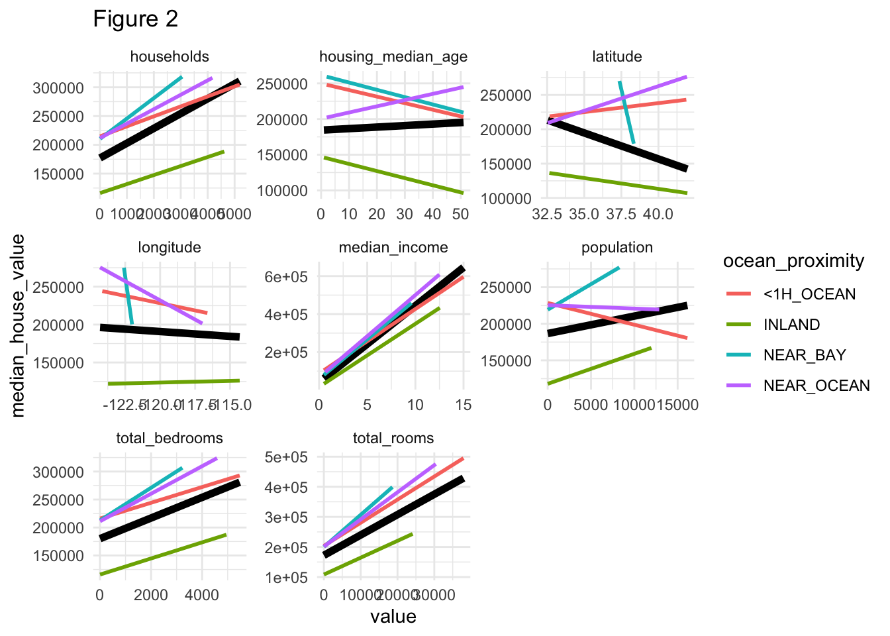
From Figures 1,2, it appears that
longitudeandlatitudeshould be nonlinear termsShould consider the interaction between
ocean_proximitywithhouseholds,housing_median_age,latitude,longitude,population,total_bedrooms,total_rooms
Note: this is just a visual inspection to create an example, more tests may be required if working on a real project.
rcs of longitude and latitude
Explore the number of knots. From the figure below, I’ll use rcs(longitude, 5).
# longitude
p1 <- ggplot(train, aes(longitude, median_house_value)) +
geom_smooth(method = "loess", formula = 'y ~ x', se = FALSE, color = "black")+
labs(title = "Loess Smooth") +
theme_bw()
p2 <- ggplot(train, aes(longitude, median_house_value)) +
geom_smooth(method = "lm", formula = 'y ~ rcs(x,3)', se = FALSE, color = "blue")+
labs(title = "RCS, 3 knots") +
theme_bw()
p3 <- ggplot(train, aes(longitude, median_house_value)) +
geom_smooth(method = "lm", formula = 'y ~ rcs(x,4)', se = FALSE, color = "blue")+
labs(title = "RCS, 4 knots") +
theme_bw()
p4 <- ggplot(train, aes(longitude, median_house_value)) +
geom_smooth(method = "lm", formula = 'y ~ rcs(x,5)', se = FALSE, color = "blue")+
labs(title = "RCS, 5 knots") +
theme_bw()
p5 <- ggplot(train, aes(longitude, median_house_value)) +
geom_smooth(method = "lm", formula = 'y ~ rcs(x,6)', se = FALSE, color = "blue")+
labs(title = "RCS, 6 knots") +
theme_bw()
design <- "
123
45#
"
p1 + p2 + p3 + p4 + p5 + plot_layout(design = design)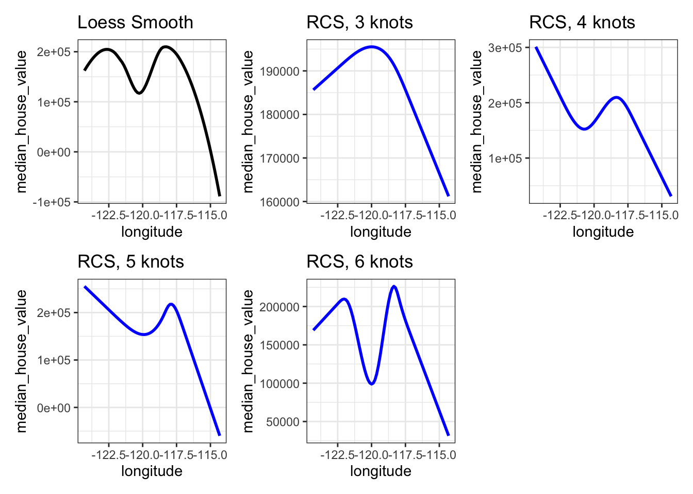
From the figure below, I’ll use rcs(latitude, 4).
# latitude
p1 <- ggplot(train, aes(latitude, median_house_value)) +
geom_smooth(method = "loess", formula = 'y ~ x', se = FALSE, color = "black")+
labs(title = "Loess Smooth") +
theme_bw()
p2 <- ggplot(train, aes(latitude, median_house_value)) +
geom_smooth(method = "lm", formula = 'y ~ rcs(x,3)', se = FALSE, color = "blue")+
labs(title = "RCS, 3 knots") +
theme_bw()
p3 <- ggplot(train, aes(latitude, median_house_value)) +
geom_smooth(method = "lm", formula = 'y ~ rcs(x,4)', se = FALSE, color = "blue")+
labs(title = "RCS, 4 knots") +
theme_bw()
p4 <- ggplot(train, aes(latitude, median_house_value)) +
geom_smooth(method = "lm", formula = 'y ~ rcs(x,5)', se = FALSE, color = "blue")+
labs(title = "RCS, 5 knots") +
theme_bw()
p5 <- ggplot(train, aes(latitude, median_house_value)) +
geom_smooth(method = "lm", formula = 'y ~ rcs(x,6)', se = FALSE, color = "blue")+
labs(title = "RCS, 6 knots") +
theme_bw()
design <- "
123
45#
"
p1 + p2 + p3 + p4 + p5 + plot_layout(design = design)
Original and centered models using the train dataset
# The original model
options(scipen = 999)
fit.o <- lm(median_house_value ~
ocean_proximity * rcs(longitude, 5) +
ocean_proximity * rcs(latitude, 4) +
ocean_proximity * housing_median_age +
ocean_proximity * total_rooms +
ocean_proximity * total_bedrooms +
ocean_proximity * population +
ocean_proximity * households +
median_income, data = train)
summary(fit.o)
Call:
lm(formula = median_house_value ~ ocean_proximity * rcs(longitude,
5) + ocean_proximity * rcs(latitude, 4) + ocean_proximity *
housing_median_age + ocean_proximity * total_rooms + ocean_proximity *
total_bedrooms + ocean_proximity * population + ocean_proximity *
households + median_income, data = train)
Residuals:
Min 1Q Median 3Q Max
-348129 -32266 -7435 23286 351079
Coefficients: (3 not defined because of singularities)
Estimate
(Intercept) -3156567.7503
ocean_proximityINLAND 6049451.1117
ocean_proximityNEAR_BAY 27089450.3403
ocean_proximityNEAR_OCEAN 24414616.4757
rcs(longitude, 5)longitude -39385.4303
rcs(longitude, 5)longitude' 385009.8599
rcs(longitude, 5)longitude'' -749579.2231
rcs(longitude, 5)longitude''' 2341732.4863
rcs(latitude, 4)latitude -47826.8041
rcs(latitude, 4)latitude' 314521.8591
rcs(latitude, 4)latitude'' -568775.1671
housing_median_age 119.0785
total_rooms -0.2443
total_bedrooms 13.1733
population -43.3010
households 119.8116
median_income 33714.4330
ocean_proximityINLAND:rcs(longitude, 5)longitude 44757.1070
ocean_proximityNEAR_BAY:rcs(longitude, 5)longitude -403223.2588
ocean_proximityNEAR_OCEAN:rcs(longitude, 5)longitude 171503.3067
ocean_proximityINLAND:rcs(longitude, 5)longitude' -518103.3524
ocean_proximityNEAR_BAY:rcs(longitude, 5)longitude' 35757982.3082
ocean_proximityNEAR_OCEAN:rcs(longitude, 5)longitude' -805173.6720
ocean_proximityINLAND:rcs(longitude, 5)longitude'' 1002237.8679
ocean_proximityNEAR_BAY:rcs(longitude, 5)longitude'' NA
ocean_proximityNEAR_OCEAN:rcs(longitude, 5)longitude'' 1407107.9584
ocean_proximityINLAND:rcs(longitude, 5)longitude''' -4012726.8612
ocean_proximityNEAR_BAY:rcs(longitude, 5)longitude''' NA
ocean_proximityNEAR_OCEAN:rcs(longitude, 5)longitude''' -8868898.2621
ocean_proximityINLAND:rcs(latitude, 4)latitude -15039.6192
ocean_proximityNEAR_BAY:rcs(latitude, 4)latitude -2115580.0052
ocean_proximityNEAR_OCEAN:rcs(latitude, 4)latitude -104301.1329
ocean_proximityINLAND:rcs(latitude, 4)latitude' -184078.3428
ocean_proximityNEAR_BAY:rcs(latitude, 4)latitude' 1122496.5142
ocean_proximityNEAR_OCEAN:rcs(latitude, 4)latitude' 417192.2210
ocean_proximityINLAND:rcs(latitude, 4)latitude'' 386959.3006
ocean_proximityNEAR_BAY:rcs(latitude, 4)latitude'' NA
ocean_proximityNEAR_OCEAN:rcs(latitude, 4)latitude'' -567362.1937
ocean_proximityINLAND:housing_median_age -82.1755
ocean_proximityNEAR_BAY:housing_median_age 96.8684
ocean_proximityNEAR_OCEAN:housing_median_age 592.0972
ocean_proximityINLAND:total_rooms -1.4762
ocean_proximityNEAR_BAY:total_rooms 15.2769
ocean_proximityNEAR_OCEAN:total_rooms 12.1418
ocean_proximityINLAND:total_bedrooms 48.6847
ocean_proximityNEAR_BAY:total_bedrooms -106.9013
ocean_proximityNEAR_OCEAN:total_bedrooms 110.0786
ocean_proximityINLAND:population 26.1814
ocean_proximityNEAR_BAY:population -20.5255
ocean_proximityNEAR_OCEAN:population 7.7182
ocean_proximityINLAND:households -131.9383
ocean_proximityNEAR_BAY:households 76.4576
ocean_proximityNEAR_OCEAN:households -205.6808
Std. Error t value
(Intercept) 1502387.0331 -2.101
ocean_proximityINLAND 1575635.9808 3.839
ocean_proximityNEAR_BAY 9875735.8030 2.743
ocean_proximityNEAR_OCEAN 3084087.3514 7.916
rcs(longitude, 5)longitude 11972.9715 -3.290
rcs(longitude, 5)longitude' 40267.6575 9.561
rcs(longitude, 5)longitude'' 66584.3070 -11.258
rcs(longitude, 5)longitude''' 272222.3700 8.602
rcs(latitude, 4)latitude 8506.2414 -5.623
rcs(latitude, 4)latitude' 35550.4715 8.847
rcs(latitude, 4)latitude'' 56622.5500 -10.045
housing_median_age 81.8566 1.455
total_rooms 1.0048 -0.243
total_bedrooms 16.3113 0.808
population 1.6904 -25.616
households 18.6519 6.424
median_income 443.6533 75.993
ocean_proximityINLAND:rcs(longitude, 5)longitude 12542.4677 3.568
ocean_proximityNEAR_BAY:rcs(longitude, 5)longitude 27134.1571 -14.860
ocean_proximityNEAR_OCEAN:rcs(longitude, 5)longitude 24068.7670 7.126
ocean_proximityINLAND:rcs(longitude, 5)longitude' 44414.5543 -11.665
ocean_proximityNEAR_BAY:rcs(longitude, 5)longitude' 3862663.0105 9.257
ocean_proximityNEAR_OCEAN:rcs(longitude, 5)longitude' 75828.3622 -10.618
ocean_proximityINLAND:rcs(longitude, 5)longitude'' 74013.0611 13.541
ocean_proximityNEAR_BAY:rcs(longitude, 5)longitude'' NA NA
ocean_proximityNEAR_OCEAN:rcs(longitude, 5)longitude'' 126715.3261 11.104
ocean_proximityINLAND:rcs(longitude, 5)longitude''' 326390.0788 -12.294
ocean_proximityNEAR_BAY:rcs(longitude, 5)longitude''' NA NA
ocean_proximityNEAR_OCEAN:rcs(longitude, 5)longitude''' 726161.2407 -12.213
ocean_proximityINLAND:rcs(latitude, 4)latitude 10929.6974 -1.376
ocean_proximityNEAR_BAY:rcs(latitude, 4)latitude 267313.8500 -7.914
ocean_proximityNEAR_OCEAN:rcs(latitude, 4)latitude 22629.0269 -4.609
ocean_proximityINLAND:rcs(latitude, 4)latitude' 44914.0651 -4.098
ocean_proximityNEAR_BAY:rcs(latitude, 4)latitude' 149909.0888 7.488
ocean_proximityNEAR_OCEAN:rcs(latitude, 4)latitude' 80761.4780 5.166
ocean_proximityINLAND:rcs(latitude, 4)latitude'' 71497.1021 5.412
ocean_proximityNEAR_BAY:rcs(latitude, 4)latitude'' NA NA
ocean_proximityNEAR_OCEAN:rcs(latitude, 4)latitude'' 122242.7423 -4.641
ocean_proximityINLAND:housing_median_age 113.7560 -0.722
ocean_proximityNEAR_BAY:housing_median_age 184.7460 0.524
ocean_proximityNEAR_OCEAN:housing_median_age 163.0914 3.630
ocean_proximityINLAND:total_rooms 1.6593 -0.890
ocean_proximityNEAR_BAY:total_rooms 2.8866 5.292
ocean_proximityNEAR_OCEAN:total_rooms 2.2233 5.461
ocean_proximityINLAND:total_bedrooms 18.4019 2.646
ocean_proximityNEAR_BAY:total_bedrooms 50.7303 -2.107
ocean_proximityNEAR_OCEAN:total_bedrooms 30.3476 3.627
ocean_proximityINLAND:population 2.8416 9.214
ocean_proximityNEAR_BAY:population 5.4134 -3.792
ocean_proximityNEAR_OCEAN:population 3.2748 2.357
ocean_proximityINLAND:households 21.2416 -6.211
ocean_proximityNEAR_BAY:households 59.0132 1.296
ocean_proximityNEAR_OCEAN:households 34.9529 -5.885
Pr(>|t|)
(Intercept) 0.035657
ocean_proximityINLAND 0.000124
ocean_proximityNEAR_BAY 0.006096
ocean_proximityNEAR_OCEAN 0.00000000000000265
rcs(longitude, 5)longitude 0.001006
rcs(longitude, 5)longitude' < 0.0000000000000002
rcs(longitude, 5)longitude'' < 0.0000000000000002
rcs(longitude, 5)longitude''' < 0.0000000000000002
rcs(latitude, 4)latitude 0.00000001920867312
rcs(latitude, 4)latitude' < 0.0000000000000002
rcs(latitude, 4)latitude'' < 0.0000000000000002
housing_median_age 0.145771
total_rooms 0.807897
total_bedrooms 0.419324
population < 0.0000000000000002
households 0.00000000013783649
median_income < 0.0000000000000002
ocean_proximityINLAND:rcs(longitude, 5)longitude 0.000360
ocean_proximityNEAR_BAY:rcs(longitude, 5)longitude < 0.0000000000000002
ocean_proximityNEAR_OCEAN:rcs(longitude, 5)longitude 0.00000000000109210
ocean_proximityINLAND:rcs(longitude, 5)longitude' < 0.0000000000000002
ocean_proximityNEAR_BAY:rcs(longitude, 5)longitude' < 0.0000000000000002
ocean_proximityNEAR_OCEAN:rcs(longitude, 5)longitude' < 0.0000000000000002
ocean_proximityINLAND:rcs(longitude, 5)longitude'' < 0.0000000000000002
ocean_proximityNEAR_BAY:rcs(longitude, 5)longitude'' NA
ocean_proximityNEAR_OCEAN:rcs(longitude, 5)longitude'' < 0.0000000000000002
ocean_proximityINLAND:rcs(longitude, 5)longitude''' < 0.0000000000000002
ocean_proximityNEAR_BAY:rcs(longitude, 5)longitude''' NA
ocean_proximityNEAR_OCEAN:rcs(longitude, 5)longitude''' < 0.0000000000000002
ocean_proximityINLAND:rcs(latitude, 4)latitude 0.168836
ocean_proximityNEAR_BAY:rcs(latitude, 4)latitude 0.00000000000000269
ocean_proximityNEAR_OCEAN:rcs(latitude, 4)latitude 0.00000408175001177
ocean_proximityINLAND:rcs(latitude, 4)latitude' 0.00004184768903419
ocean_proximityNEAR_BAY:rcs(latitude, 4)latitude' 0.00000000000007459
ocean_proximityNEAR_OCEAN:rcs(latitude, 4)latitude' 0.00000024309382034
ocean_proximityINLAND:rcs(latitude, 4)latitude'' 0.00000006336256883
ocean_proximityNEAR_BAY:rcs(latitude, 4)latitude'' NA
ocean_proximityNEAR_OCEAN:rcs(latitude, 4)latitude'' 0.00000349700211307
ocean_proximityINLAND:housing_median_age 0.470072
ocean_proximityNEAR_BAY:housing_median_age 0.600056
ocean_proximityNEAR_OCEAN:housing_median_age 0.000284
ocean_proximityINLAND:total_rooms 0.373683
ocean_proximityNEAR_BAY:total_rooms 0.00000012279624522
ocean_proximityNEAR_OCEAN:total_rooms 0.00000004820795128
ocean_proximityINLAND:total_bedrooms 0.008164
ocean_proximityNEAR_BAY:total_bedrooms 0.035115
ocean_proximityNEAR_OCEAN:total_bedrooms 0.000288
ocean_proximityINLAND:population < 0.0000000000000002
ocean_proximityNEAR_BAY:population 0.000150
ocean_proximityNEAR_OCEAN:population 0.018445
ocean_proximityINLAND:households 0.00000000054168536
ocean_proximityNEAR_BAY:households 0.195136
ocean_proximityNEAR_OCEAN:households 0.00000000409209928
(Intercept) *
ocean_proximityINLAND ***
ocean_proximityNEAR_BAY **
ocean_proximityNEAR_OCEAN ***
rcs(longitude, 5)longitude **
rcs(longitude, 5)longitude' ***
rcs(longitude, 5)longitude'' ***
rcs(longitude, 5)longitude''' ***
rcs(latitude, 4)latitude ***
rcs(latitude, 4)latitude' ***
rcs(latitude, 4)latitude'' ***
housing_median_age
total_rooms
total_bedrooms
population ***
households ***
median_income ***
ocean_proximityINLAND:rcs(longitude, 5)longitude ***
ocean_proximityNEAR_BAY:rcs(longitude, 5)longitude ***
ocean_proximityNEAR_OCEAN:rcs(longitude, 5)longitude ***
ocean_proximityINLAND:rcs(longitude, 5)longitude' ***
ocean_proximityNEAR_BAY:rcs(longitude, 5)longitude' ***
ocean_proximityNEAR_OCEAN:rcs(longitude, 5)longitude' ***
ocean_proximityINLAND:rcs(longitude, 5)longitude'' ***
ocean_proximityNEAR_BAY:rcs(longitude, 5)longitude''
ocean_proximityNEAR_OCEAN:rcs(longitude, 5)longitude'' ***
ocean_proximityINLAND:rcs(longitude, 5)longitude''' ***
ocean_proximityNEAR_BAY:rcs(longitude, 5)longitude'''
ocean_proximityNEAR_OCEAN:rcs(longitude, 5)longitude''' ***
ocean_proximityINLAND:rcs(latitude, 4)latitude
ocean_proximityNEAR_BAY:rcs(latitude, 4)latitude ***
ocean_proximityNEAR_OCEAN:rcs(latitude, 4)latitude ***
ocean_proximityINLAND:rcs(latitude, 4)latitude' ***
ocean_proximityNEAR_BAY:rcs(latitude, 4)latitude' ***
ocean_proximityNEAR_OCEAN:rcs(latitude, 4)latitude' ***
ocean_proximityINLAND:rcs(latitude, 4)latitude'' ***
ocean_proximityNEAR_BAY:rcs(latitude, 4)latitude''
ocean_proximityNEAR_OCEAN:rcs(latitude, 4)latitude'' ***
ocean_proximityINLAND:housing_median_age
ocean_proximityNEAR_BAY:housing_median_age
ocean_proximityNEAR_OCEAN:housing_median_age ***
ocean_proximityINLAND:total_rooms
ocean_proximityNEAR_BAY:total_rooms ***
ocean_proximityNEAR_OCEAN:total_rooms ***
ocean_proximityINLAND:total_bedrooms **
ocean_proximityNEAR_BAY:total_bedrooms *
ocean_proximityNEAR_OCEAN:total_bedrooms ***
ocean_proximityINLAND:population ***
ocean_proximityNEAR_BAY:population ***
ocean_proximityNEAR_OCEAN:population *
ocean_proximityINLAND:households ***
ocean_proximityNEAR_BAY:households
ocean_proximityNEAR_OCEAN:households ***
---
Signif. codes: 0 '***' 0.001 '**' 0.01 '*' 0.05 '.' 0.1 ' ' 1
Residual standard error: 54450 on 12813 degrees of freedom
Multiple R-squared: 0.6785, Adjusted R-squared: 0.6773
F-statistic: 551.9 on 49 and 12813 DF, p-value: < 0.00000000000000022# Get the centered variables and terms
# -------- dummy variables --------
vars_cat <- c("ocean_proximity")
train <- step_dummy(train, vars_cat)
# -------- rcs --------
# longitude
rcs.fit <- rcs(train$longitude, 5)
knots_longitude_train <- attributes(rcs.fit)$parms # knot locations
# latitude
rcs.fit <- rcs(train$latitude, 4)
knots_latitude_train <- attributes(rcs.fit)$parms # knot locations
# unpack rcs
vars_rcs <- c("longitude", "latitude")
knots_list <- list(knots_longitude_train, knots_latitude_train)
knots_list <- setNames(knots_list, vars_rcs)
train <- step_rcs(train, vars_rcs, knots_list)
# -------- interaction terms --------
interaction_list <- list(
c("ocean_proximity", "longitude"),
c("ocean_proximity", "latitude"),
c("ocean_proximity", "housing_median_age"),
c("ocean_proximity", "total_rooms"),
c("ocean_proximity", "total_bedrooms"),
c("ocean_proximity", "population"),
c("ocean_proximity", "households")
)
train <- step_interaction(train, interaction_list)
# -------- centering --------
vars_mean <- names(train)
# get mean values
means_train <- get_mean(train, vars_mean)
# centering vars in the train dataset
vars_center <- names(means_train)
train <- step_center(train, vars_center, means_train)# The centered model on the trin dataset
paste0("Mean outcome in the dataset: ", mean(train$median_house_value))[1] "Mean outcome in the dataset: 190162.924512166"# get names of all the centered terms
vec <- names(train %>% select(contains("_C")) %>% select(-median_house_value_C))
# reorganize to get the formula (based on the order in the original model)
vec_names <- c(
vec[9:11], # dummy: ocean_proximity
vec[12:18], # rcs(longitude, 5), rcs(latitude, 4)
vec[3:8], # other variables
vec[19:length(vec)] # interaction terms
)
formula <- as.formula(paste0("median_house_value ~ ", paste(vec_names, collapse = " + ")))
fit.c <- lm(formula, data = train)
cbind(coef(fit.o), coef(fit.c)) [,1]
(Intercept) -3156567.7503248
ocean_proximityINLAND 6049451.1117313
ocean_proximityNEAR_BAY 27089450.3403190
ocean_proximityNEAR_OCEAN 24414616.4756858
rcs(longitude, 5)longitude -39385.4302843
rcs(longitude, 5)longitude' 385009.8598946
rcs(longitude, 5)longitude'' -749579.2230573
rcs(longitude, 5)longitude''' 2341732.4863486
rcs(latitude, 4)latitude -47826.8041439
rcs(latitude, 4)latitude' 314521.8591266
rcs(latitude, 4)latitude'' -568775.1670620
housing_median_age 119.0785229
total_rooms -0.2443199
total_bedrooms 13.1733204
population -43.3009702
households 119.8116464
median_income 33714.4330140
ocean_proximityINLAND:rcs(longitude, 5)longitude 44757.1070199
ocean_proximityNEAR_BAY:rcs(longitude, 5)longitude -403223.2587771
ocean_proximityNEAR_OCEAN:rcs(longitude, 5)longitude 171503.3066855
ocean_proximityINLAND:rcs(longitude, 5)longitude' -518103.3524151
ocean_proximityNEAR_BAY:rcs(longitude, 5)longitude' 35757982.3082178
ocean_proximityNEAR_OCEAN:rcs(longitude, 5)longitude' -805173.6720327
ocean_proximityINLAND:rcs(longitude, 5)longitude'' 1002237.8679424
ocean_proximityNEAR_BAY:rcs(longitude, 5)longitude'' NA
ocean_proximityNEAR_OCEAN:rcs(longitude, 5)longitude'' 1407107.9583563
ocean_proximityINLAND:rcs(longitude, 5)longitude''' -4012726.8612470
ocean_proximityNEAR_BAY:rcs(longitude, 5)longitude''' NA
ocean_proximityNEAR_OCEAN:rcs(longitude, 5)longitude''' -8868898.2621222
ocean_proximityINLAND:rcs(latitude, 4)latitude -15039.6192312
ocean_proximityNEAR_BAY:rcs(latitude, 4)latitude -2115580.0052054
ocean_proximityNEAR_OCEAN:rcs(latitude, 4)latitude -104301.1328852
ocean_proximityINLAND:rcs(latitude, 4)latitude' -184078.3428398
ocean_proximityNEAR_BAY:rcs(latitude, 4)latitude' 1122496.5142072
ocean_proximityNEAR_OCEAN:rcs(latitude, 4)latitude' 417192.2209594
ocean_proximityINLAND:rcs(latitude, 4)latitude'' 386959.3005964
ocean_proximityNEAR_BAY:rcs(latitude, 4)latitude'' NA
ocean_proximityNEAR_OCEAN:rcs(latitude, 4)latitude'' -567362.1936769
ocean_proximityINLAND:housing_median_age -82.1754728
ocean_proximityNEAR_BAY:housing_median_age 96.8683668
ocean_proximityNEAR_OCEAN:housing_median_age 592.0972227
ocean_proximityINLAND:total_rooms -1.4761759
ocean_proximityNEAR_BAY:total_rooms 15.2769421
ocean_proximityNEAR_OCEAN:total_rooms 12.1418385
ocean_proximityINLAND:total_bedrooms 48.6847225
ocean_proximityNEAR_BAY:total_bedrooms -106.9013390
ocean_proximityNEAR_OCEAN:total_bedrooms 110.0786118
ocean_proximityINLAND:population 26.1814137
ocean_proximityNEAR_BAY:population -20.5255203
ocean_proximityNEAR_OCEAN:population 7.7181825
ocean_proximityINLAND:households -131.9383004
ocean_proximityNEAR_BAY:households 76.4576031
ocean_proximityNEAR_OCEAN:households -205.6808427
[,2]
(Intercept) 190162.9245108
ocean_proximityINLAND 6049451.1120568
ocean_proximityNEAR_BAY 27089450.3442241
ocean_proximityNEAR_OCEAN 24414616.4762743
rcs(longitude, 5)longitude -39385.4302869
rcs(longitude, 5)longitude' 385009.8599022
rcs(longitude, 5)longitude'' -749579.2230687
rcs(longitude, 5)longitude''' 2341732.4863652
rcs(latitude, 4)latitude -47826.8041437
rcs(latitude, 4)latitude' 314521.8591249
rcs(latitude, 4)latitude'' -568775.1670608
housing_median_age 119.0785229
total_rooms -0.2443199
total_bedrooms 13.1733204
population -43.3009702
households 119.8116464
median_income 33714.4330140
ocean_proximityINLAND:rcs(longitude, 5)longitude 44757.1070225
ocean_proximityNEAR_BAY:rcs(longitude, 5)longitude -403223.2587726
ocean_proximityNEAR_OCEAN:rcs(longitude, 5)longitude 171503.3066901
ocean_proximityINLAND:rcs(longitude, 5)longitude' -518103.3524228
ocean_proximityNEAR_BAY:rcs(longitude, 5)longitude' 35757982.3079216
ocean_proximityNEAR_OCEAN:rcs(longitude, 5)longitude' -805173.6720455
ocean_proximityINLAND:rcs(longitude, 5)longitude'' 1002237.8679539
ocean_proximityNEAR_BAY:rcs(longitude, 5)longitude'' NA
ocean_proximityNEAR_OCEAN:rcs(longitude, 5)longitude'' 1407107.9583752
ocean_proximityINLAND:rcs(longitude, 5)longitude''' -4012726.8612653
ocean_proximityNEAR_BAY:rcs(longitude, 5)longitude''' NA
ocean_proximityNEAR_OCEAN:rcs(longitude, 5)longitude''' -8868898.2621635
ocean_proximityINLAND:rcs(latitude, 4)latitude -15039.6192314
ocean_proximityNEAR_BAY:rcs(latitude, 4)latitude -2115580.0052985
ocean_proximityNEAR_OCEAN:rcs(latitude, 4)latitude -104301.1328863
ocean_proximityINLAND:rcs(latitude, 4)latitude' -184078.3428380
ocean_proximityNEAR_BAY:rcs(latitude, 4)latitude' 1122496.5142603
ocean_proximityNEAR_OCEAN:rcs(latitude, 4)latitude' 417192.2209664
ocean_proximityINLAND:rcs(latitude, 4)latitude'' 386959.3005950
ocean_proximityNEAR_BAY:rcs(latitude, 4)latitude'' NA
ocean_proximityNEAR_OCEAN:rcs(latitude, 4)latitude'' -567362.1936859
ocean_proximityINLAND:housing_median_age -82.1754728
ocean_proximityNEAR_BAY:housing_median_age 96.8683668
ocean_proximityNEAR_OCEAN:housing_median_age 592.0972227
ocean_proximityINLAND:total_rooms -1.4761759
ocean_proximityNEAR_BAY:total_rooms 15.2769421
ocean_proximityNEAR_OCEAN:total_rooms 12.1418385
ocean_proximityINLAND:total_bedrooms 48.6847225
ocean_proximityNEAR_BAY:total_bedrooms -106.9013390
ocean_proximityNEAR_OCEAN:total_bedrooms 110.0786118
ocean_proximityINLAND:population 26.1814137
ocean_proximityNEAR_BAY:population -20.5255203
ocean_proximityNEAR_OCEAN:population 7.7181825
ocean_proximityINLAND:households -131.9383004
ocean_proximityNEAR_BAY:households 76.4576031
ocean_proximityNEAR_OCEAN:households -205.6808427Further sampling
In order to make the test dataset as if from a differnt sample/population, create two test sets, the cheaper houses and the more expensive houses. Also further sample 5% of each test sets for a easier visualization (calibration plot).
test_cheap <- test %>% filter(median_house_value <= median(test$median_house_value))
set.seed(31511)
sample <- sample.int(n = nrow(test_cheap), size = floor(.05*nrow(test_cheap)), replace = F)
test_cheap <- test_cheap[sample, ]
test_expensive <- test %>% filter(median_house_value > median(test$median_house_value))
set.seed(31511)
sample <- sample.int(n = nrow(test_expensive), size = floor(.05*nrow(test_expensive)), replace = F)
test_expensive <- test_expensive[sample, ]df <- bind_rows(
train %>% select(longitude:ocean_proximity) %>% mutate(type = "train") ,
test_cheap %>% mutate(type = "test_cheap"),
test_expensive %>% mutate(type = "test_expensive"))
df$type <- factor(df$type, levels= c("train", "test_cheap", "test_expensive"))
df %>%
tbl_summary(by = "type") %>%
modify_header(label = "**Variable**") %>% # update the column header
modify_caption("Table 2. Summary of the three datasets") %>%
bold_labels() %>%
as_flex_table()Variable | train | test_cheap | test_expensive |
|---|---|---|---|
longitude | -118.45 (-121.56, -117.97) | -119.42 (-121.66, -118.08) | -118.40 (-121.98, -117.95) |
latitude | 34.24 (33.92, 37.67) | 35.93 (33.95, 37.94) | 34.17 (33.83, 37.32) |
housing_median_age | 27 (17, 36) | 29 (18, 36) | 29 (20, 37) |
total_rooms | 2,155 (1,465, 3,184) | 1,796 (1,118, 2,784) | 2,170 (1,722, 3,425) |
total_bedrooms | 443 (303, 659) | 388 (256, 605) | 439 (313, 631) |
population | 1,203 (812, 1,782) | 1,069 (768, 1,832) | 1,052 (851, 1,649) |
households | 417 (285, 615) | 365 (241, 580) | 421 (303, 598) |
median_income | 3.49 (2.55, 4.63) | 2.61 (2.10, 3.27) | 4.13 (3.51, 5.37) |
median_house_value | 171,900 (115,900, 244,200) | 112,600 (86,200, 148,500) | 239,000 (198,500, 318,600) |
ocean_proximity | |||
<1H_OCEAN | 5,763 (45%) | 46 (33%) | 82 (60%) |
INLAND | 4,390 (34%) | 69 (50%) | 12 (8.8%) |
NEAR_BAY | 1,101 (8.6%) | 12 (8.7%) | 12 (8.8%) |
NEAR_OCEAN | 1,609 (13%) | 11 (8.0%) | 31 (23%) |
1Median (Q1, Q3); n (%) | |||
Apply the models on the cheaper houses: test_cheap dataset
# Preprocess the `test_cheap` dataset
# -------- dummy variables --------
vars_cat <- c("ocean_proximity")
test_cheap <- step_dummy(test_cheap, vars_cat)
# -------- rcs --------
# IMPORTANT: using the knot locations in the `train` dataset
vars_rcs <- c("longitude", "latitude")
knots_list <- list(knots_longitude_train, knots_latitude_train) # SEE HERE!!
knots_list <- setNames(knots_list, vars_rcs)
test_cheap <- step_rcs(test_cheap, vars_rcs, knots_list)
# -------- interaction terms --------
interaction_list <- list(
c("ocean_proximity", "longitude"),
c("ocean_proximity", "latitude"),
c("ocean_proximity", "housing_median_age"),
c("ocean_proximity", "total_rooms"),
c("ocean_proximity", "total_bedrooms"),
c("ocean_proximity", "population"),
c("ocean_proximity", "households")
)
test_cheap <- step_interaction(test_cheap, interaction_list)
# -------- centering --------
vars_mean <- names(test_cheap)
# 1. centering using the mean values in the `train` dataset
test_cheap_means_train <- step_center(test_cheap, vars_center, means_train)
# 2. centering using the mean values in the `test_cheap` dataset
# get mean values
means_test_cheap <- get_mean(test_cheap, vars_mean)
# centering vars in the test_cheap dataset
vars_center <- names(means_test_cheap)
test_cheap_means_test_cheap <- step_center(test_cheap, vars_center, means_test_cheap)# The original model on the test_cheap dataset
test_cheap_means_train$pred.o <- predict(fit.o, newdata = test_cheap_means_train)
# The centered model on the test_cheap dataset, using the mean values in the train dataset
test_cheap_means_train$pred.c <- predict(fit.c, newdata = test_cheap_means_train)
# The centered model on the test_cheap dataset, using the mean values in the test_cheap dataset
# NOTE: need to manually changing the intercept to the new outconme mean
paste0("Mean outcome in the dataset: ", mean(test_cheap_means_test_cheap$median_house_value))[1] "Mean outcome in the dataset: 115102.898550725"fit.c.2 <- fit.c
fit.c.2$coefficients[1] <- mean(test_cheap_means_test_cheap$median_house_value)
test_cheap_means_test_cheap$pred.c <- predict(fit.c.2, newdata = test_cheap_means_test_cheap)
# To confirm that column 2 and 3 below are identical
head(cbind(test_cheap_means_train$median_house_value, test_cheap_means_train$pred.o,
test_cheap_means_train$pred.c, test_cheap_means_test_cheap$pred.c)) [,1] [,2] [,3] [,4]
[1,] 145200 129397.46 129397.46 111290.40
[2,] 148200 140242.06 140242.06 122135.00
[3,] 73800 101046.11 101046.11 82939.06
[4,] 75000 172280.43 172280.43 154173.37
[5,] 164000 82143.28 82143.28 64036.22
[6,] 162000 170750.24 170750.24 152643.18Some calibration plots on the test_cheap dataset
Since train and test_cheap datasets are from the same population, recalibration doesn’t have a strong effect.
# ---------- Overall calibration ----------
# The original model
res <- calibration(test_cheap_means_train$pred.o, test_cheap_means_train$median_house_value, labelPos.x = 30000, labelPos.y = 220000, marginPlt = TRUE)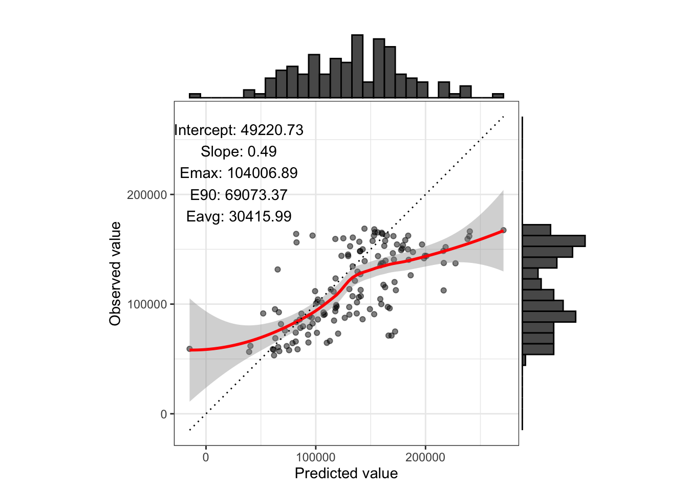
res group Intercept Slope Emax E90 Eavg
1 49220.73 0.4945739 104006.9 69073.37 30415.99# The centered model with the original means
# It is confirm that this is the same as using the original model. Will be ommitted below.
res <- calibration(test_cheap_means_train$pred.c, test_cheap_means_train$median_house_value, labelPos.x = 30000, labelPos.y = 220000, marginPlt = TRUE)
res group Intercept Slope Emax E90 Eavg
1 49220.73 0.4945739 104006.9 69073.37 30415.99# The centered model with the updated means
res <- calibration(test_cheap_means_test_cheap$pred.c, test_cheap_means_test_cheap$median_house_value, labelPos.x = 30000, labelPos.y = 220000, marginPlt = TRUE)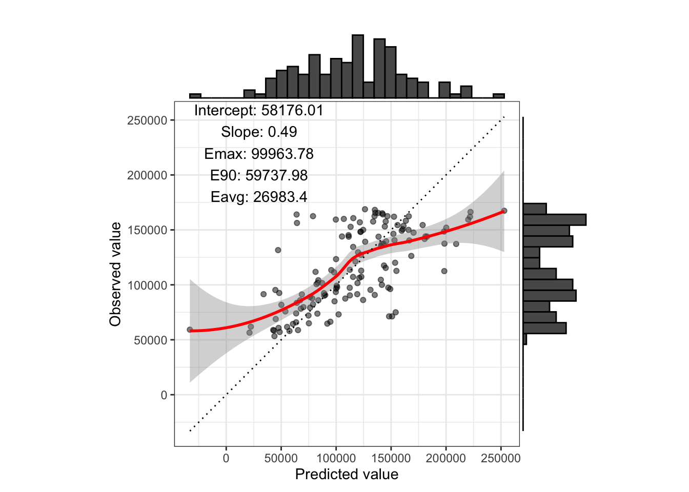
res group Intercept Slope Emax E90 Eavg
1 58176.01 0.4945739 99963.78 59737.98 26983.4# ---------- Calibration on ocean_proximity ----------
# The original model
res <- calibration(test_cheap_means_train$pred.o, test_cheap_means_train$median_house_value, group = test_cheap_means_train$ocean_proximity, labelPos.x = 30000, labelPos.y = 220000, marginPlt = TRUE)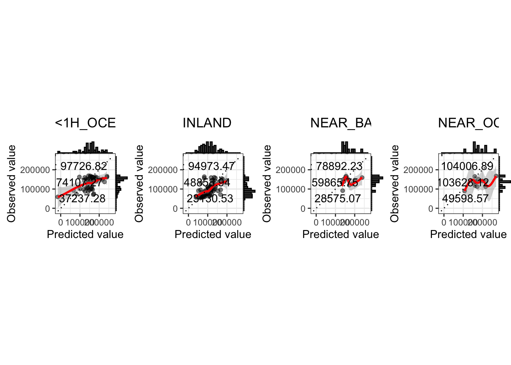
res group Intercept Slope Emax
1 49220.7277873034 0.494573922613971 104006.88901982
2 <1H_OCEAN 74217.3626534643 0.366615086307092 97726.8227205036
3 INLAND 40230.1533037862 0.536726525022307 94973.4679338615
4 NEAR_BAY 115217.460932162 0.163585516884874 78892.2311431508
5 NEAR_OCEAN 78863.1815357313 0.300481782080869 104006.88901982
E90 Eavg
1 69073.3735514908 30415.9919905195
2 74107.2749995844 37237.2804259024
3 48858.935485975 23130.5346686188
4 59865.7484572527 28575.0686998696
5 103628.120953743 49598.5707788225# The original model with the updated means
res <- calibration(test_cheap_means_test_cheap$pred.c, test_cheap_means_test_cheap$median_house_value, group = test_cheap_means_test_cheap$ocean_proximity, labelPos.x = 30000, labelPos.y = 220000, marginPlt = TRUE)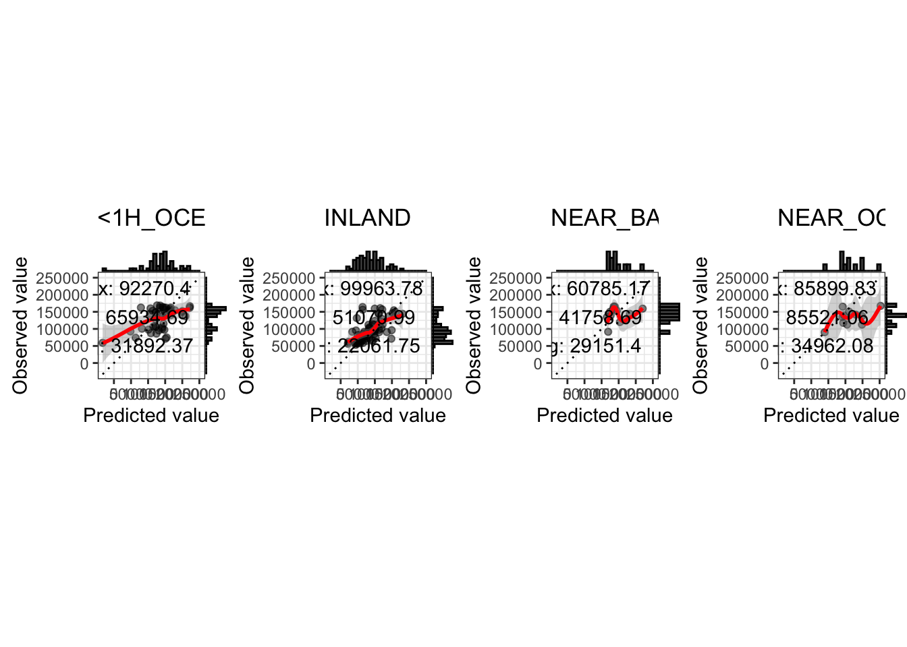
res group Intercept Slope Emax
1 58176.0065105024 0.494573922611842 99963.7829211572
2 <1H_OCEAN 80855.6833007541 0.366615086305333 92270.400187191
3 INLAND 49948.6916451379 0.53672652502257 99963.7829211572
4 NEAR_BAY 118179.513381607 0.16358551688283 60785.1731015507
5 NEAR_OCEAN 84304.0226040116 0.300481782081245 85899.8309789057
E90 Eavg
1 59737.982561281 26983.4039897797
2 65934.6940314728 31892.3709881853
3 51070.9884681703 22061.7535666442
4 41758.690414637 29151.4044641467
5 85521.0629129042 34962.0759513512Apply the models on the more expensive houses: test_expensive dataset
# Preprocess the `test_expensive` dataset
# -------- dummy variables --------
vars_cat <- c("ocean_proximity")
test_expensive <- step_dummy(test_expensive, vars_cat)
# -------- rcs --------
# IMPORTANT: using the knot locations in the `train` dataset
vars_rcs <- c("longitude", "latitude")
knots_list <- list(knots_longitude_train, knots_latitude_train) # SEE HERE!!
knots_list <- setNames(knots_list, vars_rcs)
test_expensive <- step_rcs(test_expensive, vars_rcs, knots_list)
# -------- interaction terms --------
interaction_list <- list(
c("ocean_proximity", "longitude"),
c("ocean_proximity", "latitude"),
c("ocean_proximity", "housing_median_age"),
c("ocean_proximity", "total_rooms"),
c("ocean_proximity", "total_bedrooms"),
c("ocean_proximity", "population"),
c("ocean_proximity", "households")
)
test_expensive <- step_interaction(test_expensive, interaction_list)
# -------- centering --------
vars_mean <- names(test_expensive)
# 1. centering using the mean values in the `train` dataset
test_expensive_means_train <- step_center(test_expensive, vars_center, means_train)
# 2. centering using the mean values in the `test_expensive` dataset
# get mean values
means_test_expensive <- get_mean(test_expensive, vars_mean)
# centering vars in the test_expensive dataset
vars_center <- names(means_test_expensive)
test_expensive_means_test_expensive <- step_center(test_expensive, vars_center, means_test_expensive)# The original model on the test_expensive dataset
test_expensive_means_train$pred.o <- predict(fit.o, newdata = test_expensive_means_train)
# The centered model on the test_expensive dataset, using the mean values in the train dataset
test_expensive_means_train$pred.c <- predict(fit.c, newdata = test_expensive_means_train)
# The centered model on the test_expensive dataset, using the mean values in the test_expensive dataset
# NOTE: need to manually changing the intercept to the new outconme mean
paste0("Mean outcome in the dataset: ", mean(test_expensive_means_test_expensive$median_house_value))[1] "Mean outcome in the dataset: 267826.277372263"fit.c.2 <- fit.c
fit.c.2$coefficients[1] <- mean(test_expensive_means_test_expensive$median_house_value)
test_expensive_means_test_expensive$pred.c <- predict(fit.c.2, newdata = test_expensive_means_test_expensive)
# To confirm that column 2 and 3 below are identical
head(cbind(test_expensive_means_train$median_house_value, test_expensive_means_train$pred.o,
test_expensive_means_train$pred.c, test_expensive_means_test_expensive$pred.c)) [,1] [,2] [,3] [,4]
[1,] 273800 238948.4 238948.4 257949.8
[2,] 185900 257779.4 257779.4 276780.7
[3,] 193800 241635.9 241635.9 260637.3
[4,] 350000 205356.9 205356.9 224358.2
[5,] 281300 255948.2 255948.2 274949.5
[6,] 396300 247880.2 247880.2 266881.5Some calibration plots on the test_expensive dataset
Since train and test_expensive datasets are from the same population, recalibration doesn’t have a strong effect.
# ---------- Overall calibration ----------
# The original model
res <- calibration(test_expensive_means_train$pred.o, test_expensive_means_train$median_house_value, labelPos.x = 200000, labelPos.y = 450000, marginPlt = TRUE)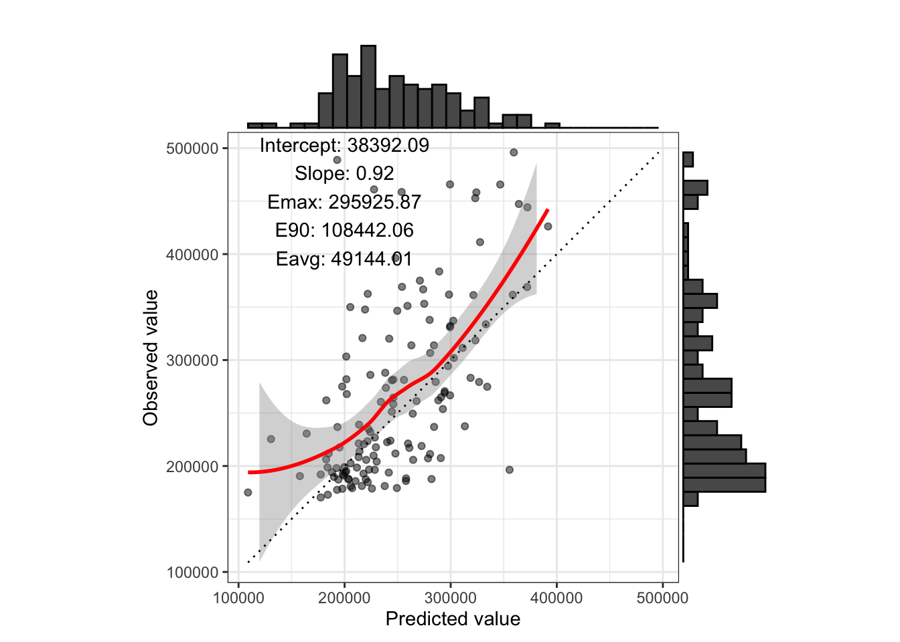
res group Intercept Slope Emax E90 Eavg
1 38392.09 0.9220708 295925.9 108442.1 49144.01# The centered model with the updated means
res <- calibration(test_expensive_means_test_expensive$pred.c, test_expensive_means_test_expensive$median_house_value, labelPos.x = 200000, labelPos.y = 450000, marginPlt = TRUE)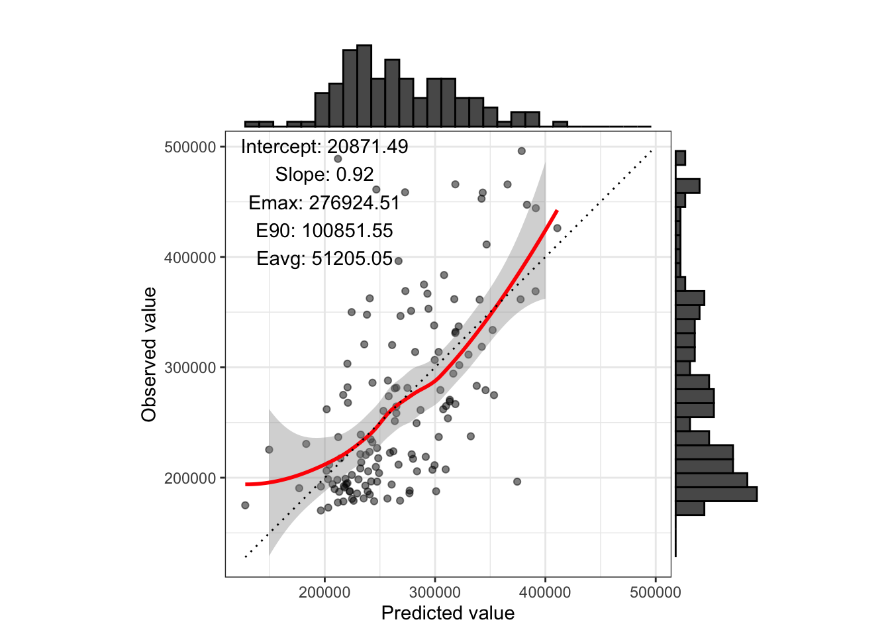
res group Intercept Slope Emax E90 Eavg
1 20871.49 0.9220708 276924.5 100851.5 51205.05# ---------- Calibration on ocean_proximity ----------
# The original model
res <- calibration(test_expensive_means_train$pred.o, test_expensive_means_train$median_house_value, group = test_expensive_means_train$ocean_proximity, labelPos.x = 200000, labelPos.y = 450000, marginPlt = TRUE)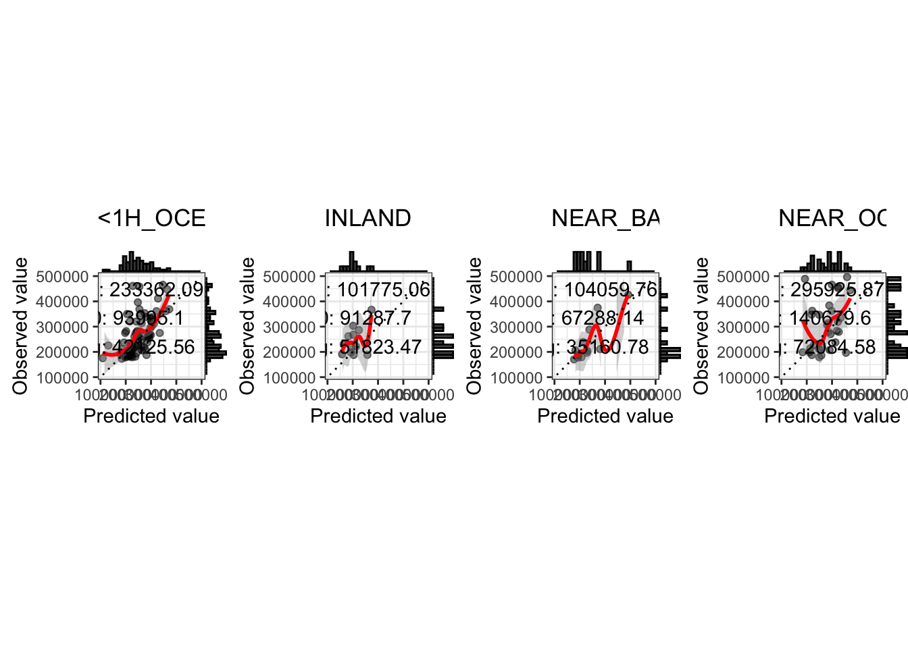
res group Intercept Slope Emax
1 38392.08566726 0.922070803277315 295925.869616176
2 <1H_OCEAN 31410.9435649187 0.935589238923206 233362.09372422
3 INLAND 89808.0620886236 0.746073106243099 101775.059769638
4 NEAR_BAY -37057.0125514169 1.17699057545676 104059.762373125
5 NEAR_OCEAN 102580.345404111 0.727047907376554 295925.869616176
E90 Eavg
1 108442.05556676 49144.007395252
2 93995.0976912768 42125.5615448095
3 91287.7039386755 51823.4658651938
4 67288.1363245943 35160.7771253753
5 140679.599092369 72084.5822770423# The original model with the updated means
res <- calibration(test_expensive_means_test_expensive$pred.c, test_expensive_means_test_expensive$median_house_value, group = test_expensive_means_test_expensive$ocean_proximity, labelPos.x = 200000, labelPos.y = 450000, marginPlt = TRUE)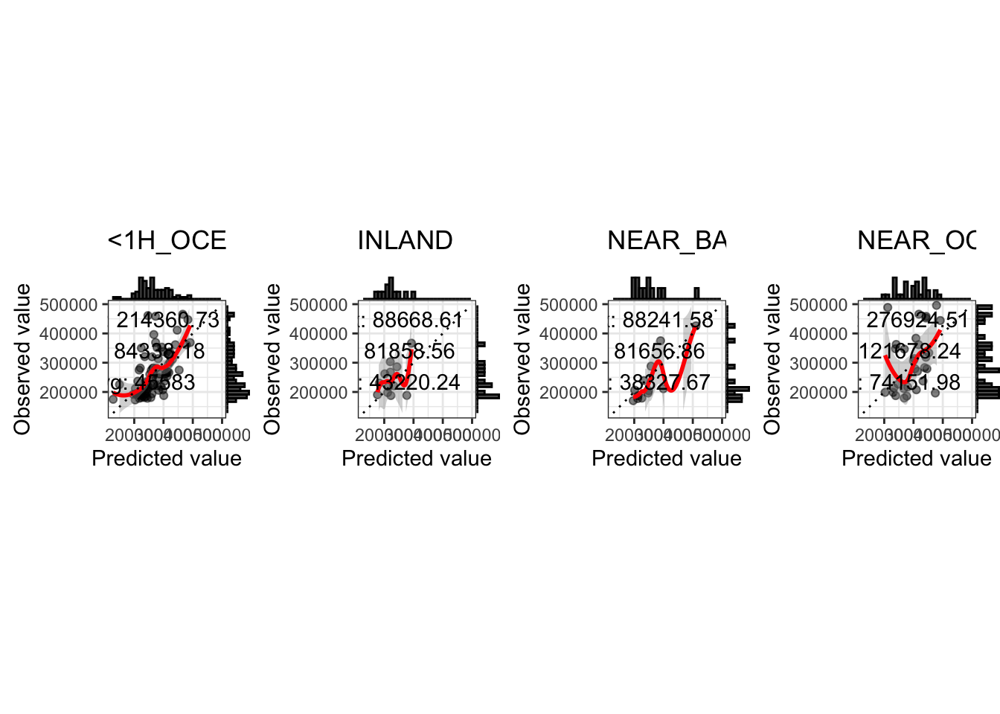
res group Intercept Slope Emax
1 20871.4866573836 0.922070803275326 276924.509905576
2 <1H_OCEAN 13633.4758965017 0.935589238923128 214360.734015451
3 INLAND 75631.658627661 0.746073106242951 88668.6082123927
4 NEAR_BAY -59421.4338497942 1.17699057545825 88241.5821480429
5 NEAR_OCEAN 88765.4465894019 0.727047907376148 276924.509905576
E90 Eavg
1 100851.548932597 51205.0522420385
2 84338.182419569 45582.9975964682
3 81858.5630240534 43220.241184442
4 81656.8575022057 38327.6704103114
5 121678.239381761 74151.9811326402